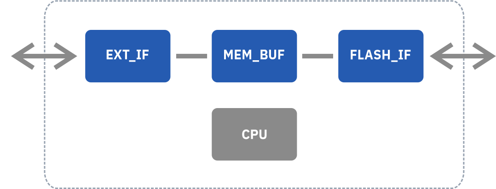

NAND флеш-память
NAND-флэш является основным и самым дорогостоящим компонентом твердотельного накопителя. Выделим три основных типа памяти, используемых в современных SSD:
- Planar NAND / 2D NAND — устаревший вариант NAND памяти, который характеризуется однослойной структурой расположения ячеек памяти.
- 3D NAND / V-NAND — современный и самый распространенный на сегодняшний день тип флэш-памяти в твердотелых накопителях, который характеризуется многослойной структурой расположения ячеек памяти.
- 3D XPOINT — совместная разработка Intel и Micron, являющаяся более быстрой и более дорогой альтернативой 3D NAND памяти.
Микросхема NAND флеш-памяти – хранилище для информации пользователя (фотографии, фильмы, документы, системные файлы операционной системы и т.п.).
Остановимся на вопросах интерфейса доступа к данным и актуальных для твердотельных накопителей проблемах сохранности информации в NAND флеш-памяти.
Микросхему NAND флеш-памяти можно сравнить с архивом бумажных документов. Наподобие того, как бумаги хранятся в архиве, также электронные документы хранятся в памяти микросхем.
Важнейшими функциями любой системы хранения данных и архива являются:
- Хранение данных — архив должен иметь условия, обеспечивающие сохранность бумаг.
- Доступ к информации — библиотекарь должен иметь возможность поработать с нужным документом, иначе архив бесполезен.
Cистема хранения данных во флеш-памяти имеет следующие особенности
- Заряд с затвора способен «утекать» со временем, что рано или поздно приведет к изменению данных. Например, как чернила на архивных бумагах со временем выцветают или растекаются, превращаясь в неразборчивые пятна. Чем дольше хранятся данные, тем меньше вероятность их потом прочитать.
- После записи одними и теми же цепями одинакового логического уровня заряда в разные ячейки из-за технологического разброса параметров транзисторов появится вероятность прочитать оттуда разные по величине значения заряда. (Бумага может иметь разные свойства впитывания и растекания чернил. Мелкий текст, написанный фломастером, не на каждой бумаге удастся прочитать.)
- Цепи записи и чтения заряда также не идеальны и имеют технологический разброс уровней напряжения программирования и порогов чтения логических уровней. (Похоже на то, как на бумажных носителях разные библиотекари по-разному могут разобрать текст, записанный разными авторами, потому что почерк у всех разный.)
Контроллер
Контроллер обеспечивает подключение к хосту, и, собственно, представляется накопителем. В общем виде архитектура любого контроллера любого накопителя выглядит типично: имеются аппаратные блоки интерфейсов для обмена данными с хостом (EXT_IF) и NAND-памятью (FLASH_IF). Между блоками интерфейсов в обязательном порядке присутствует буферная оперативная память (MEM_BUF), предназначенная для оперативного кэширования данных и сглаживания потока записи/чтения данных. В контроллерах USB-накопителей буферная память составляет десятки килобайт и размещается непосредственно в самом контроллере. В высокопроизводительных системах, таких как SSD-накопители, используются внешние микросхемы памяти. Данные между интерфейсными блоками и буферной памятью передаются без непосредственного участия процессора по каналам прямого доступа к памяти (DMA, direct memory access). Участие процессора в передаче данных заключается в настройке каналов DMA и синхронизации работы блоков.
Любой из подключаемых накопителей является «блочным устройством». Блочное устройство – это устройство, в котором данные хранятся в виде последовательной цепочки логических блоков, обращение к которым возможно по адресу Logical Block Address (LBA). Большинство устройств поддерживает размер блока в 512 байт, который называется «сектор». Сектор является минимальной дискретной информацией, которая может быть перезаписана на блочном устройстве. То есть для замены одного байта хост должен передать целиком сектор на устройство хранения.